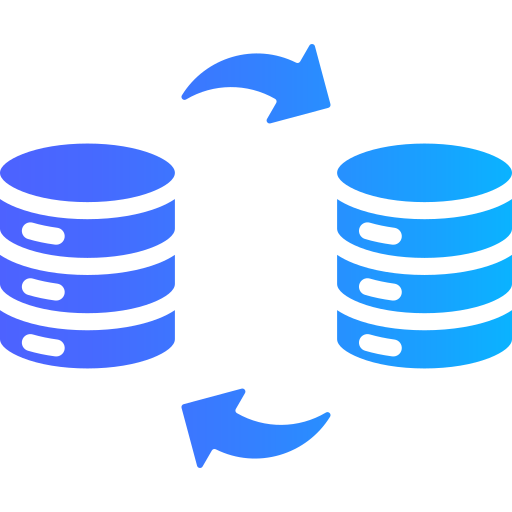

Mes Projets
Automatisation des rapports financiers
Automatisation des processus de reporting financier pour BNP Paribas Personal Finance.
Technologies : Python, SQL, Power BI.

Conception de dashboards interactifs
Développement de dashboards Power BI pour le suivi des performances commerciales.
Technologies : Power BI, DAX, Python.

Migration et modélisation de données
Migration des données et modélisation des processus pour des clients de LaFigue.
Technologies : Python, SQL, Dataiku, Tableau.